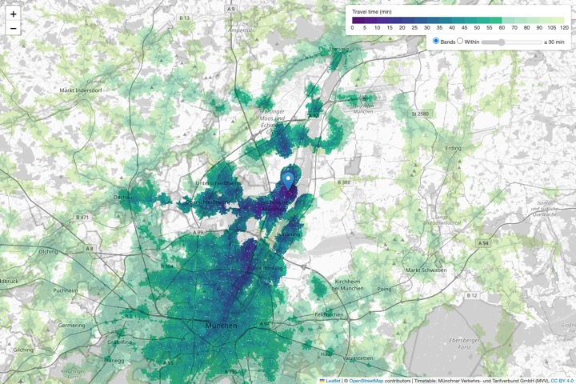
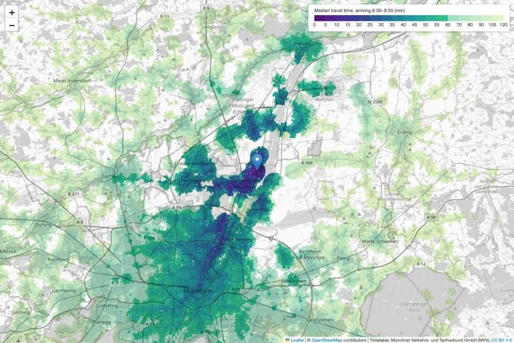
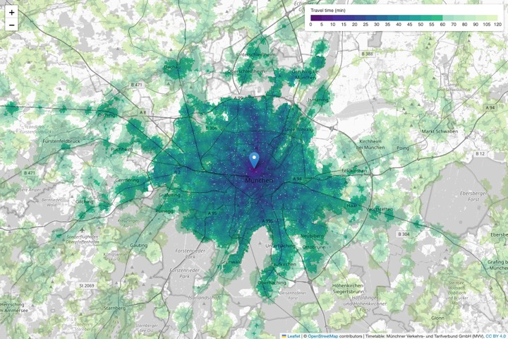
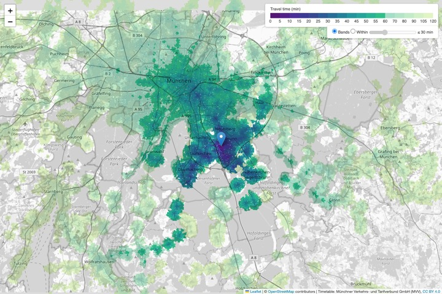
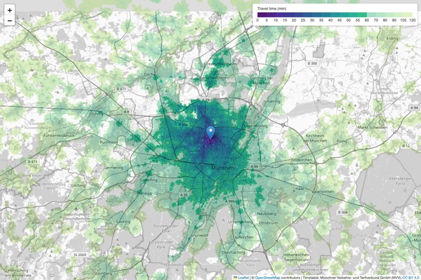
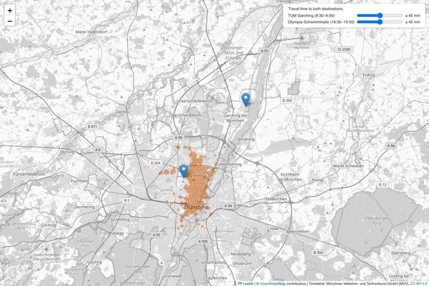

Reverse isochrones for Munich public transport
From where, and how late, can you leave to reach a place on time by public transport and on foot? Each map colours every 100 m cell by the minutes needed, using the MVV timetable of Wednesday, 9 December 2026. Switch a map to “Within” to see only the area reachable within a chosen number of minutes. The last map combines two destinations: it shows the cells from which both can be reached within the limits set by two sliders.
Maps

arrive by 9:00

arrive around 9:00

arrive by 9:00

arrive by 9:00

arrive by 19:00

around 9:00 and around 19:00
How accurate
The maps are indicative: travel times are usually within one 5-minute band of the MVV journey planner, and errors tend to be optimistic. Transfers in large stations are estimated from straight-line distances, and walks of up to 1300 m to and from stops are allowed. The Garching map was checked against the MVV app and r5py, the Arcisstraße map against the MVV app; the Ottobrunn and evening maps only on single journeys (both 4–5 minutes optimistic).
Method, validation and code: GitHub repository.